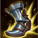

起手組件
 長劍
長劍提高普攻、一技與前期持續傷害。
校正至 7.3c · 2026-10-25。Tier與配置是本站的模式策略判斷，不是官方勝率排名。
起手組件 → 一階鞋或首件核心（依壓力調整）→ 核心成裝 → 鞋子升級 → 情境後續裝。五件成裝加一雙鞋；鞋子兩張圖表示升級前後，不是同時購買兩雙。
提高普攻、一技與前期持續傷害。

希瓦娜：技能後穿插普攻觸發魔法彎刀，提供技能普攻循環；不與另一件魔法彎刀成裝無理由重疊。

希瓦娜：以普攻與命中特效處理高生命目標並補續航；沒有安全普攻窗口時不能靠單件裝硬打。
攻速與魔抗兼顧，強化混合輸出。

變龍進場後提供生命與護盾。

後期大絕深度進場時提供復活。

攻速加快普攻、一技與怒氣循環。
控制與魔法傷害多時提高容錯。

保留最可靠的進退與關鍵技能銜接；雪球戰車進場後仍可用閃現修正位置。

雪球命中後可等待隊友跟上再進場，讓近戰英雄在單線拉扯中擁有穩定的接戰與追擊角度。

變龍後持續普攻與技能能快速疊滿。

提高前期近戰輸出。

面對高生命前排時增加傷害。

攻速提升怒氣與普攻節奏。

大絕進場後降低第一輪爆發。
3 技 > 2 技 > 1 技
主 3 提高遠距消耗與龍形範圍傷害，次 2 強化追擊與持續傷害；一技提供普攻重置，大絕能點就點。
人形態用三技安全消耗並等待怒氣，不要在無大絕時站最前面硬換。
有大絕後先找敵方陣型邊緣切入，落地三技標記多人，再用二技加速黏住前排。
不要獨自飛進五人中央。等隊友先逼控制技能，再大絕打亂陣型；守護天使可用時才做更深的追擊。

希瓦娜：降低物理爆發的立即壓力並獎勵參與擊殺；7.3a價格提高，不能忽略先做便宜防禦組件的時機。
希瓦娜：承受魔法傷害後疊層取得額外魔防與跑速；不再宣稱舊版百分比魔傷減免。
希瓦娜：同時提供物理穿透與重創；和多明尼克的問候、席利妲咒怨擇一，不把多件穿透裝當作預設。
標準 ARAM 最後可追溯倍率：7.1d 標準 ARAM：希瓦娜承傷 85%→95%。同步 6.3d 二技每秒基礎傷害與龍形三技持續傷害下修。 本輪核對至7.3c，未以符文大亂鬥倍率覆蓋；官方未提供本英雄完整新版倍率總表，若遊戲內不同以當局模式增益為準。
希瓦娜在人形態累怒，開大進場後用強化火焰吐息與普攻持續壓多人；技能與普攻是核心，雷霆、跑速、體型與單人強者能放大龍形態。
實戰使用方式：看遊戲增幅卡片下方的官方分類 → 點相同分類 → 優先看 S+／S／A；再依本局增幅方向選擇對應出裝路線。
核心
三技能與龍形態範圍傷害是主要威脅，技能循環能提高變龍期間輸出。
核心
一技能與攻速裝需要高頻普攻，命中特效卡能直接提高持續輸出。
高適配
龍形態多段範圍傷害容易連續命中，能穩定觸發雷霆系列。
高適配
二技能加速與貼身輸出都依賴機動，額外跑速能提高黏人。
高適配
龍形態本就偏前排，生命與體型能提高深入敵陣後的承傷。
適配
技能普攻循環、處刑與保命類單卡能提高變龍後收割。
技能／普攻增幅多
三相、殞落與智慧末刃支撐龍形態普攻，再用史特拉克與守護天使提高深入敵陣容錯。 本路線已同步7.3c的一般裝備；增幅專屬替換另依抽卡決定。
希瓦娜：技能後穿插普攻觸發魔法彎刀，提供技能普攻循環；不與另一件魔法彎刀成裝無理由重疊。
希瓦娜：以普攻與命中特效處理高生命目標並補續航；沒有安全普攻窗口時不能靠單件裝硬打。
攻速與魔抗兼顧，強化混合輸出。
變龍進場後提供生命與護盾。
後期大絕深度進場時提供復活。
攻速加快普攻、一技與怒氣循環。
控制與魔法傷害多時提高容錯。
需要更久站場
加入死亡之舞，讓大絕落地後有更多時間打完強化技能。
希瓦娜：技能後穿插普攻觸發魔法彎刀，提供技能普攻循環；不與另一件魔法彎刀成裝無理由重疊。
希瓦娜：以普攻與命中特效處理高生命目標並補續航；沒有安全普攻窗口時不能靠單件裝硬打。
希瓦娜：降低物理爆發的立即壓力並獎勵參與擊殺；7.3a價格提高，不能忽略先做便宜防禦組件的時機。
變龍進場後提供生命與護盾。
後期大絕深度進場時提供復活。
攻速加快普攻、一技與怒氣循環。
控制與魔法傷害多時提高容錯。
分類與單卡評級是本站條件式建議。新卡完整效果未核實時不補造數值；當局抽到的卡片會改變優先順序。
7.3c／2026-10-25：本英雄標準ARAM重新核對五件成裝、鞋線、符文、技能用途與模式差異。共通裝備採7.3改版並累計7.3a/b差異；7.3c新倍率只套用符文大亂鬥。Tier為本站單線5v5判斷，並非官方勝率排名。